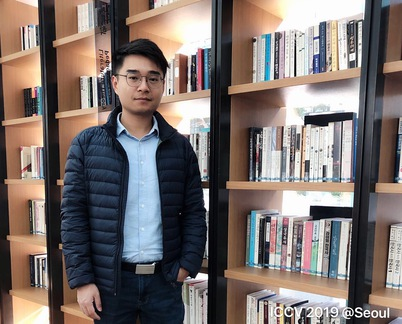
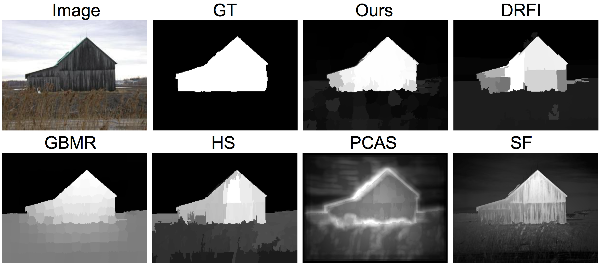
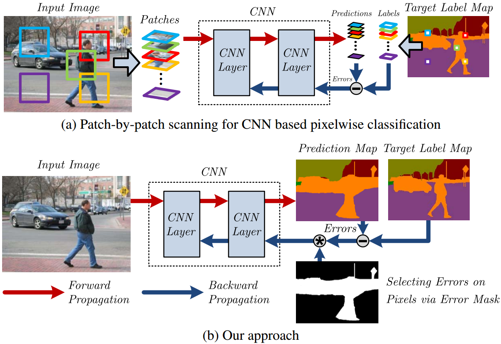
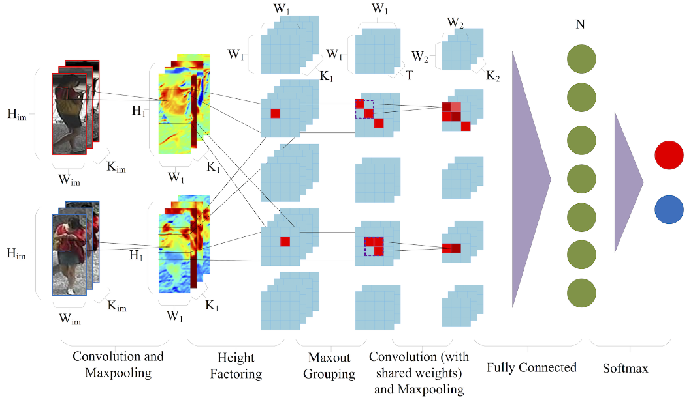
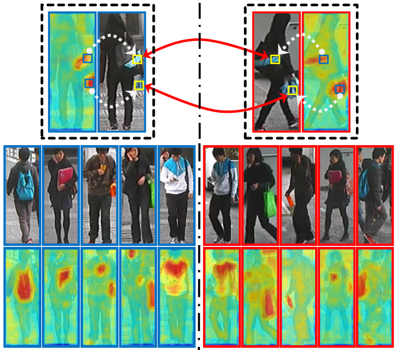
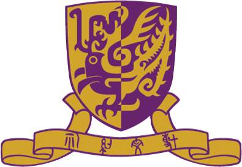

|
 |
Executive Research Director
SenseTime Group Limited
Tel.: +86 188 2316 1367
Email: zhaorui at sensetime.com
12/F, Block C, ISPSZHK, Bing Lang Road,
Futian District, Shenzhen, Guangdong, P.R.China
|
[
Google Scholar] [
Linkedin] [
CV]
Rui Zhao is an Executive Research Director at SenseTime, CTO and the head of R&D in SenseTime Smart City Group (SCG), where he leads a team of talented and energetic researchers and engineers to foster and develop innovative techniques for smart city solutions. Prior to this, he was the CTO and Chief Scientist of SenseNets, an affiliated venture with SenseTime during 2015-2017. He received his Bachelors degree from University of Science and Technology of China (USTC) in 2010, his Ph.D. degree from The Chinese University of Hong Kong (CUHK) in 2015. He is a leading expert on AI in both classic models (face recognition and person re-identification) and generative models (large language models and visual-language models). He has gained over 10,000 Google Scholar Citations with more than 150 publications during last 10 years. His research interests include computer vision, large language modeling, and large multimodality modeling. He is a recipient of Wen Jun Wu's AI Award for Scientific and Technology Progress from Ministry of Education of China in 2019, Black Sheep Award (for extraordinary contribution with 1‰ award rate) from SenseTime in 2018, Peacock Program Talent Award from Shenzhen Municipal Government in 2016, Outstanding Reviewer Award from ECCV 2016, Doctoral Consortium Award from CVPR 2015, and Travel Award from ICCV 2013 respectively.
In SenseTime SCG, his team focuses on research topics including deep learning based human biometric analysis, scaling up large vision models, and large multimodality model applications, etc. His team has a close collaboration with Prof. Wanli Ouyang in Univ. of Sydney, Prof. Hongsheng Li in CUHK, Prof. Yu Qiao in SIAT of CAS, Prof. Nenghai Yu in USTC, and Prof. Dahua Lin in CUHK.
If you are looking to join SenseTime SCG for an Internship or as a full-time researcher, send an email with your resume. We still have a few open positions. Candidates with strong publication record and self-motivation are prefered.
Highlights and News
-
Nov. 2, 2020: one paper accepted by NIPS 2020, and one accepted by WACV 2021.
-
Jul. 3, 2020: two papers accepted by ECCV 2020.
-
Feb. 27, 2020: three papers accepted by CVPR 2020.
-
June, 2019: one papers accepted by ICCV 2019.
-
Mar. 20, 2019: two papers accepted by CVPR 2019.
-
Feb. 20, 2018: one paper accepted by CVPR 2018.
-
Jul. 23, 2016: one paper accepted by ECCV 2016.
-
Mar. 13, 2016: PAMI paper accepted.
-
May 21, 2015: Code and supplementary material of our CVPR'15 work on saliency detection are released.
Selected Publications [Full List]
-
Memory-Based Neighbourhood Embedding for Visual Recognition,
Suichan Li, Dapeng Chen, Bin Liu, Nenghai Yu, Rui Zhao
IEEE International Conference on Computer Vision (ICCV), 2019. (Oral with acceptance rate: 4.6%)
[PDF]
[Abstract]
Learning discriminative image feature embeddings is of great importance to visual recognition. To achieve better feature embeddings, most current methods focus on designing different network structures or loss functions, and the estimated feature embeddings are usually only related to the input images. In this paper, we propose Memory-based Neighbourhood Embedding (MNE) to enhance a general CNN feature by considering its neighbourhood. The method aims to solve two critical problems, ie, how to acquire more relevant neighbours in the network training and how to aggregate the neighbourhood information for a more discriminative embedding. We first augment an episodic memory module into the network, which can provide more relevant neighbours for both training and testing. Then the neighbours are organized in a tree graph with the target instance as the root node. The neighbourhood information is gradually aggregated to the root node in a bottom-up manner, and aggregation weights are supervised by the class relationships between the nodes. We apply MNE on image search and few shot learning tasks. Extensive ablation studies demonstrate the effectiveness of each component, and our method significantly outperforms the state-of-the-art approaches.
|

|
-
Saliency Detection by Multi-context Deep Learning,
R. Zhao, W. Ouyang, H. Li and X. Wang
IEEE International Conference on Computer Vision and Pattern Recognition (CVPR), 2015. (Acceptance rate: 28.4%)
[PDF]
[Abstract]
[Bibtex]
[Code]
[Supplementary Material]
[Poster]
[DOI]
Low-level saliency cues or priors do not produce good enough saliency detection results especially when the salient object presents in a low-contrast background with confusing visual appearance. This issue raises a serious problem for conventional approaches. In this paper, we tackle this problem by proposing a multi-context deep learning framework for salient object detection. We employ deep Convolutional Neural Networks to model saliency of objects in images. Global context and local context are both taken into account, and are jointly modeled in a unified multi-context deep learning framework.
To provide a better initialization for training the deep neural networks, we investigate different pre-training strategies, and a task-specific pre-training scheme is designed to make the multi-context modeling suited for saliency detection. Furthermore, recently proposed contemporary deep models in the ImageNet Image Classification Challenge are tested, and their effectiveness in saliency detection are investigated. Our approach is extensively evaluated on five public datasets, and experimental results show significant and consistent improvements over the state-of-the-art methods.
|

@inproceedings{zhao2015saliency,
title = {Saliency Detection by Multi-context Deep Learning},
author={Zhao, Rui and Ouyang, Wanli and Li, Hongsheng and Wang, Xiaogang},
booktitle={CVPR},
year={2015}
}
-
Highly Efficient Forward and Backward Propagation of Convolutional Neural
Networks for Pixelwise Classification,
H. Li, R. Zhao, and X. Wang
Preprint , arXiv:1412.4526, 2014.
[PDF]
[Abstract]
[Bibtex]
[DOI]
We present highly efficient algorithms for performing forward and backward propagation of Convolutional Neural Network (CNN) for pixelwise classification on images. For pixelwise classification tasks, such as image segmentation and object detection, surrounding image patches are fed into CNN for predicting the classes of centered pixels via forward propagation and for updating CNN parameters via backward propagation. However, forward and backward propagation was originally designed for whole-image classification. Directly applying it to pixelwise classification in a patch-by-patch scanning manner is extremely inefficient, because surrounding patches of pixels have large overlaps, which lead to a lot of redundant computation.
The proposed algorithms eliminate all the redundant computation in convolution and pooling on images by introducing novel d-regularly sparse kernels. It generates exactly the same results as those by patch-by-patch scanning. Convolution and pooling operations with such kernels are able to continuously access memory and can run efficiently on GPUs. A fraction of patches of interest can be chosen from each training image for backward propagation by applying a mask to the error map at the last CNN layer. Its computation complexity is constant with respect to the number of patches sampled from the image. Experiments have shown that our proposed algorithms speed up commonly used patch-by-patch scanning over 1500 times in both forward and backward propagation. The speedup increases with the sizes of images and patches.
|

@inproceedings{li2015high,
title = {Highly Efficient Forward and Backward Propagation of Convolutional Neural
Networks for Pixelwise Classification},
author={Li, Hongsheng and Zhao, Rui and Wang, Xiaogang},
booktitle={arXiv:1412.4526},
year={2015}
}
-
DeepReid: Deep Filter Pairing Neural Network for Person Re-Identification,
W. Li, R. Zhao, T. Xiao and X. Wang.
IEEE International Conference on Computer Vision and Pattern Recognition (CVPR), 2014. (Acceptance rate: 29.8%)
[PDF]
[Abstract]
[Bibtex]
[Poster]
[DOI]
Person re-identification is to match pedestrian images from disjoint camera views detected by pedestrian detectors. Challenges are presented in the form of complex variations of lightings, poses, viewpoints, blurring effects, image resolutions, camera settings, occlusions and background clutter across camera views. In addition, misalignment introduced by the pedestrian detector will affect most existing person re-identification methods that use manually cropped pedestrian images and assume perfect detection.
In this paper, we propose a novel filter pairing neural network (FPNN) to jointly handle misalignment, photometric and geometric transforms, occlusions and background clutter. All the key components are jointly optimized to maximize the strength of each component when cooperating with others. In contrast to existing works that use handcrafted features, our method automatically learns features optimal for the re-identification task from data. The learned filter pairs encode photometric transforms. Its deep architecture makes it possible to model a mixture of complex photometric and geometric transforms. We build the largest benchmark re-id dataset with 13,164 images of 1,360 pedestrians. Unlike existing datasets, which only provide manually cropped pedestrian images, our dataset provides automatically detected bounding boxes for evaluation close to practical applications. Our neural network significantly outperforms state-of-the-art methods on this dataset.
|

@inproceedings{li2014deepreid,
title = {DeepReid: Deep Filter Pairing Neural Network for Person Re-identification},
author={Li, Wei and Zhao, Rui and Xiao, Tong and Wang, Xiaogang},
booktitle = {IEEE Conference on Computer Vision and Pattern Recognition (CVPR)},
year = {2014},
month = {June},
address = {Columbus, USA}
}
-
Unsupervised Salience Learning for Person Re-Identification,
R. Zhao, W. Ouyang and X. Wang.
IEEE International Conference on Computer Vision and Pattern Recognition (CVPR), 2013. (Acceptance rate: 25.2%)
[PDF]
[Abstract]
[Bibtex]
[Project Page]
[Poster]
[Code]
[DOI]
|  |
Human eyes can recognize person identities based on some small salient regions. However, such valuable salient information is often hidden when computing similarities of images with existing approaches. Moreover, many existing approaches learn discriminative features and handle drastic viewpoint change in a supervised way and require labeling new training data for a different pair of camera views. In this paper, we propose a novel perspective for person re-identification based on unsupervised salience learning. Distinctive features are extracted without requiring identity labels in the training procedure. First, we apply adjacency constrained patch matching to build dense correspondence between image pairs, which shows effectiveness in handling misalignment caused by large viewpoint and pose variations. Second, we learn human salience in an unsupervised manner. To improve the performance of person re-identification, human salience is incorporated in patch matching to find reliable and discriminative matched patches. The effectiveness of our approach is validated on the widely used VIPeR dataset and ETHZ dataset.
|
@inproceedings{zhao2013unsupervised,
title = {Unsupervised Salience Learning for Person Re-identification},
author={Zhao, Rui and Ouyang, Wanli and Wang, Xiaogang},
booktitle = {IEEE Conference on Computer Vision and Pattern Recognition (CVPR)},
year = {2013},
month = {June},
address = {Portland, USA}
}
Professional Activitiy
Journal Reviewer
- TPAMI, IJCV, TIP, TCSVT, TNNLS, TITS, SPL, IMAVIS, MVA, etc
Conference Reviewer / External Reviewer
- CVPR 2013-2018, ICCV 2015, ECCV 2014, ACCV 2014, ICPR 2012
Program Committee Member
- AAAI 2016-2018, ACCV 2014, HIS (ACCV-W 2014), DLVD (ACCV-W 2014), BigMM 2015
Member of IEEE and CVF
Teaching
Teaching assistant at CUHK for the following courses:
2011, Fall Basic Circuit Theory (ENGG1110A).
2012, Spring Introduction to Engineering Design (ENGG1100).
2012, Fall Basic Circuit Theory (ENGG1110B).
2013, Spring Problem Solving By Java Programming (ENGG1110D).
-
2014, Spring Problem Solving By Java Programming (ENGG1110J).
-
2014, Spring Pattern Recognition (ENGG5202).
-
2014, Fall Biomedical Imaging Applications (BMEG4320).
-
2015, Spring Problem Solving By C Programming (ENGG1110N).
Resources
Source Code
-
deepsaldet : C++/Python code of our CVPR 2015 work "Saliency Detection by Multi-Context Deep Learning".
-
midfilter_reid : MATLAB code of our CVPR 2014 work "Learning Mid-level Filters for Person Re-identification".
-
salience_match : MATLAB code of our ICCV 2013 work "Person Re-identification by Salience Matching".
-
salience_reid : MATLAB code of our CVPR 2013 work "Unsupervised Salience Learning for Person Re-identification".
-
dense_feat : MATLAB code of dense feature extractor used in our person re-identification works.
Datasets
-
CUHK01 Dataset : Person re-id dataset with 3, 884 images of 972 pedestrians. All pedestrian images are manually cropped, and normalized to 160 x 60 pixel.
-
CUHK02 Dataset : Person re-id dataset with five camera view settings. This dataset is used for evaluating re-id algorithms under different camera view transforms.
-
CUHK03 Dataset : Person re-id dataset with 13, 164 images of 1, 360 pedestrians. This dataset provides both manually cropped pedestrian images and auto detected ones (using prevailing pedestrian detector).
Links


{kind=link}
{kind=link}
{kind=link}
{kind=link}
{kind=link}